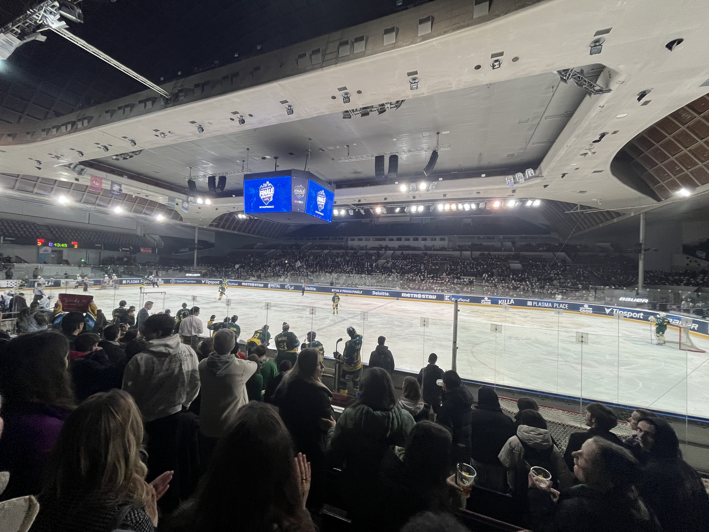
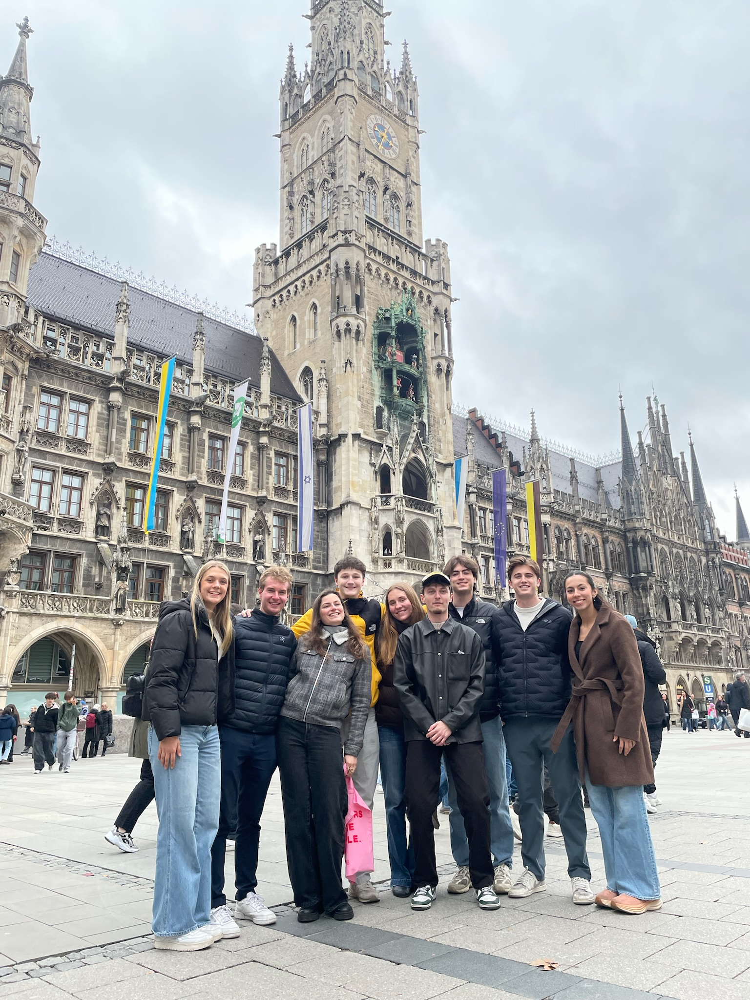
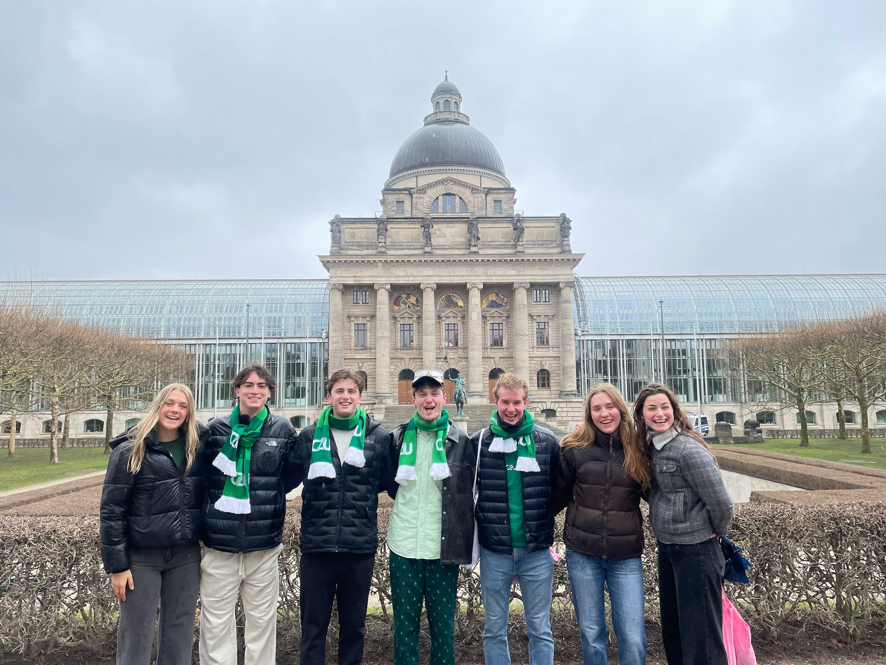

March 27, 2025
Battle for Prague
For most of the semester Česká Zemědělská Univerzita has nothing in the way of sports culture but wow did that change for the Battle of Prague. Once a semester the four main universities in Prague, Czech University of Life Sciences (ČZU), Czech Technical University (ČVUT), Charles University (UK), and the University of Economics (VŠE), come together for a tournament to determine the best team in Prague. During the fall semester play in games ČZU lost so we played for third place against VŠE this semester. Before the game, we all bought ČZU scarves to show our spirit. Some of us went early to the pregame parade to the stadium, complete with green hair spray, face paint, free beer, and a police escort. It was really entertaining to be walking with a bunch of Czech students and shouting chants without having any idea what they meant. At the stadium, we met up with the rest of the group and went into the stadium. We went to a ČZU game in February and were very disappointed by the lack of fan turnout and energy but tonight was completely different. The stadium was packed with fans from the four schools and energy was super high. I daresay there was more fan energy than at UW, or at least comparable to the UW student section at hockey games. We had a total blast even though ČZU was by far the worst team. We lost 4-2 and it was never a competition, I think the loss extends our losing streak to 9 games…


Munich
We had a fun but rainy weekend of sightseeing in Munich. We took a morning Flixbus and arrived in Munich at 2. After checking into the Wombat hostel, which I can highly recommend, we headed out to see the sights. We visited Munich Cathedral, St Peter’s Cathedral, and the New Town Hall in Munich’s central square, Marienplatz. St Peter’s Cathedral was beautiful with gold statues and murals, and we were lucky enough to have a live choir performing while we were there. We also paid to climb up the south tower for fantastic views of Munich. The view of the New Town Hall from the top was incredible, such a unique-looking building. We climbed down in time to catch the last of the three daily clock shows. The buildup of bells chiming took a full 10 minutes before the show started but it was worth the wait. Life-sized figures reenact jousting and dancing scenes from Munich’s history. It knocked the Prague astronomical clock’s show out of the water. For dinner, we went to Hofbräuhaus which was the largest restaurant I have ever been in, there was easily seating for 1000 people. We enjoyed some beer steins and traditional German food, it was a good time. Day two was rainy all morning. We were cold and wet on our walk to Eisbachwelle to see the river surfers but it was well worth it. They were incredible. What a cool thing to be able to do in the middle of a big city like Munich. After watching for a while we migrated to a St Patrick’s Day festival with live music but we were all so cold that we left pretty quickly. Near the festival, we stopped at Theatine Church and St. Michael München. Theatine Church had incredible stone carvings throughout the church, I can’t imagine the amount of work that went into it. Overall I enjoyed Munich, it was nice to walk from our hostel to all of the famous buildings in under half an hour. The food was good but expensive compared to Prague. I wish we had gotten better weather but we got so spoiled in Innsbruck that we were due for a not-as-good weather weekend, and it really only rained for a few hours the whole time.



